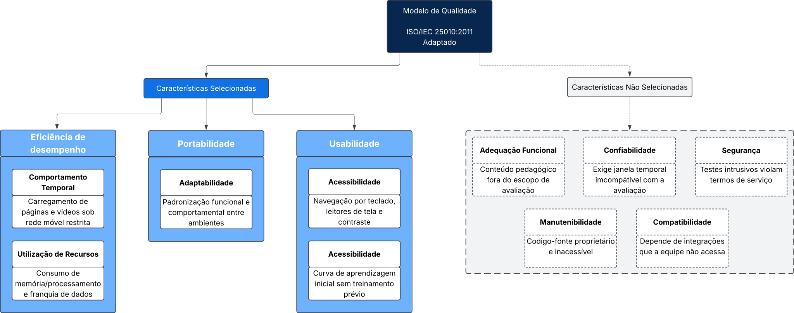

Requisitos de avaliação¶
Versão 1.3
Este artefato estabelece os requisitos para avaliação da qualidade do produto de software Khan Academy, apresentando o propósito do estudo, o uso dos resultados e as características que fundamentam o processo. Essas definições orientam o planejamento da avaliação e estabelecem a base para a elaboração dos objetivos, das questões e das métricas da Fase 2.
As características selecionadas são fundamentadas no modelo de qualidade da ISO/IEC 25010:2011 S1 adotado para o estudo e justificadas nas seções específicas deste documento.
O artefato complementa a Caracterização do produto e do contexto de uso e o Escopo da avaliação, garantindo rastreabilidade entre o contexto de uso e as medições planejadas, sem antecipar o escopo do estudo.
1. Propósito da avaliação e uso pretendido¶
1.1 Por que avaliar¶
A Khan Academy é uma plataforma educacional acessível pela web. Parte dos alunos que poderiam usá-la estuda em condições desfavoráveis, com computadores de recursos limitados, conexão lenta ou instável, sistemas operacionais variados e, em alguns casos, baixa visão ou outra necessidade de acessibilidade. Nessas condições, um conteúdo de boa qualidade pedagógica pode ficar inacessível na prática porque a página demora a carregar, o vídeo trava, a interface não funciona no navegador disponível ou o leitor de tela não interpreta adequadamente o exercício.
O propósito da avaliação é verificar se a Khan Academy atende, com qualidade suficiente, alunos que acessam a plataforma em ambientes com recursos limitados e com necessidades específicas, produzindo evidências que apoiem a decisão de adotá-la como apoio ao ensino nesse contexto.
1.2 Cenário de aplicação¶
Para que o resultado apoie uma decisão concreta, a avaliação adota o seguinte cenário: a coordenação de uma escola pública, cujos alunos utilizam computadores com diferentes sistemas operacionais, recursos limitados e conexão instável, decide se recomenda a Khan Academy Web como apoio às aulas e em quais condições de acesso. O cenário é uma hipótese de trabalho da equipe, usada para orientar as escolhas.
1.3 Requisitante e destinatários dos resultados¶
O requisitante da avaliação é a coordenação da escola do cenário da seção 1.2, que precisa decidir se recomenda a Khan Academy aos alunos. A Tabela 1 mostra cada decisão que a avaliação apoia, quem a toma e qual resultado a sustenta.
| ID | Decisão apoiada | Quem decide | Resultado que apoia a decisão | Desfechos possíveis |
|---|---|---|---|---|
D1 |
Recomendar ou não a plataforma web nos ambientes de computador avaliados e indicar as condições de acesso observadas | Coordenação da escola e professores | Comportamento temporal, utilização de recursos e adaptabilidade em cada ambiente avaliado | Recomendar sem ressalvas; recomendar apenas nos navegadores, sistemas e condições de rede em que os fluxos foram concluídos; não recomendar |
D2 |
Indicar a plataforma a alunos com baixa visão ou que usam leitor de tela, e com quais ajustes | Professores e responsáveis | Achados de acessibilidade nos fluxos principais | Indicar com os ajustes que funcionaram (zoom, alto contraste ou leitor de tela); indicar com ressalvas por fluxo; não indicar |
D3 |
Planejar uma aula introdutória sobre como usar a plataforma, ou dispensá-la | Professores | Facilidade de aprendizado dos fluxos principais por um aluno novo | Dispensar a aula; prever uma introdução curta aos fluxos com mais erros; prever acompanhamento no primeiro uso |
D4 |
Definir objetivos, questões e métricas da Fase 2 e o rigor de cada parte da avaliação | Equipe avaliadora | Prioridades da seção 2.4 e rastreabilidade da seção 4 | Manter, aumentar ou reduzir a profundidade de cada requisito na Fase 2 |
Tabela 1. Decisões apoiadas pela avaliação. Fonte: Elaborada por: Luisa de Souza
A equipe de produto da Khan Academy é uma destinatária potencial dos achados, que podem indicar correções prioritárias. Como não há contato formal com a empresa, ela não é tratada como tomadora de decisão nesta avaliação.
1.4 Uso pretendido e limites¶
Os resultados serão publicados no artigo da disciplina e nesta GitPage, como relatório técnico de avaliação externa (caixa-preta). Não são certificação de qualidade, não comparam a Khan Academy com outras plataformas e não avaliam a qualidade do conteúdo pedagógico. Valem apenas para as versões, os computadores, os navegadores, as condições de rede e os perfis efetivamente avaliados, definidos pela equipe.
2. Características selecionadas¶
2.1 Modelo de referência e versão¶
A avaliação usa o modelo de qualidade de produto da ISO/IEC 25010:2011 S1. Essa versão foi escolhida por três motivos: é a usada no material da disciplina, tem tradução da ABNT e é a base da ISO/IEC 25023:2016 S3, norma de medição que fornecerá as métricas da Fase 2. Assim, modelo e medidas usam os mesmos nomes.
Existe uma versão mais nova, a ISO/IEC 25010:2023 S2, que substitui a de 2011. Ela renomeou duas das características escolhidas e dividiu uma subcaracterística, como mostra a Tabela 2. A troca de versão não muda o que será avaliado, só os nomes. A Tabela 2 serve para quem consultar a versão de 2023 encontrar as características correspondentes.
| ISO/IEC 25010:2011 S1 | ISO/IEC 25010:2023 S2 | Mudança |
|---|---|---|
| Eficiência de desempenho: comportamento temporal, utilização de recursos | Eficiência de desempenho: comportamento temporal, utilização de recursos | Sem mudança nas subcaracterísticas selecionadas |
| Portabilidade: adaptabilidade | Flexibilidade: adaptabilidade | Característica renomeada |
| Usabilidade: apreensibilidade | Capacidade de interação: aprendizibilidade | Característica renomeada |
| Usabilidade: acessibilidade | Capacidade de interação: inclusividade e assistência ao usuário | Subcaracterística dividida em duas |
Tabela 2. Correspondência entre os nomes da ISO/IEC 25010:2011 S1 e da ISO/IEC 25010:2023 S2 para as características selecionadas. Fonte: Elaborada por: Luisa de Souza, com base em S1 e S2
Os termos em português da versão de 2011 seguem a tradução da ABNT, e, os da versão de 2023 são tradução da equipe.
2.2 Adaptação do modelo de qualidade e representação gráfica¶
O modelo geral da ISO/IEC 25010:2011 S1 propõe uma estrutura abrangente voltada a qualquer produto de software. No entanto, uma avaliação externa (caixa-preta) focada na adoção da Khan Academy no contexto de escolas públicas requer uma adaptação deliberada. Um modelo genérico não reflete, por si só, os desafios de alunos que utilizam computadores com recursos limitados e conexões instáveis, tampouco as limitações metodológicas de uma equipe avaliadora sem acesso ao código-fonte proprietário da plataforma.
Dessa forma, a decisão de adaptar o modelo sustenta-se nas seguintes razões técnicas e metodológicas:
- Poda e exclusão justificada: Características que exigem acesso interno ao código-fonte proprietário (Manutenibilidade), testes de intrusão não autorizados em ambiente de terceiros (Segurança), observação temporal contínua e extensa (Confiabilidade) ou auditoria de matriz curricular (Adequação Funcional) foram descartadas por inviabilidade técnica ou desconexão com a avaliação externa do software (detalhadas na Tabela 4, seção 2.4).
- Foco nas subcaracterísticas críticas: Das características mantidas, foram selecionadas estritamente aquelas que respondem às decisões concretas
D1aD3. Em Usabilidade, por exemplo, o escopo prioriza Acessibilidade (inclusão de alunos com baixa visão ou usuários de tecnologias assistivas) e Apreensibilidade (capacidade de estudo autônomo sem exigir sobrecarga de orientação do professor), deixando de fora aspectos de estética visual ou operabilidade genérica (ver Tabela 6). - Refinamento operacional para a Khan Academy: Cada subcaracterística ganha significado prático no contexto do produto, conectando-se diretamente aos atores e às decisões apoiadas, conforme estruturado na Figura 1.

Figura 1. Modelo de qualidade adaptado da ISO/IEC 25010:2011 S1 para a avaliação da Khan Academy. Fonte: Elaborada por: José Augusto
2.3 Características, subcaracterísticas e normas¶
A Tabela 3 lista as três características e as cinco subcaracterísticas selecionadas, com a norma que define cada uma e a norma que fornecerá as medidas.
| Característica | Subcaracterística | O que será observado na Khan Academy | Modelo | Medidas |
|---|---|---|---|---|
| Eficiência de desempenho | Comportamento temporal | Tempo para carregar páginas, iniciar vídeos e responder a exercícios | ISO/IEC 25010:2011 S1 | ISO/IEC 25023:2016 S3, medidas de comportamento temporal |
| Eficiência de desempenho | Utilização de recursos | Consumo de CPU, memória e dados de rede durante os fluxos principais | ISO/IEC 25010:2011 S1 | ISO/IEC 25023:2016 S3, medidas de utilização de recursos |
| Portabilidade | Adaptabilidade | Funcionamento dos fluxos principais em diferentes sistemas operacionais, navegadores e resoluções de computador, sem alteração do produto | ISO/IEC 25010:2011 S1 | ISO/IEC 25023:2016 S3, medidas de adaptabilidade |
| Usabilidade | Apreensibilidade | Facilidade de um aluno novo aprender a encontrar um conteúdo, assistir a uma aula e resolver um exercício | ISO/IEC 25010:2011 S1 | ISO/IEC 25023:2016 S3, medidas de apreensibilidade |
| Usabilidade | Acessibilidade | Uso dos fluxos principais com leitor de tela, ampliação e alto contraste | ISO/IEC 25010:2011 S1 | ISO/IEC 25023:2016 S3, medidas de acessibilidade |
Tabela 3. Características e subcaracterísticas selecionadas, com as normas de referência. Fonte: Elaborada por: Luisa de Souza, com base em S1 e S3
2.4 Seleção e priorização¶
A seleção e a priorização usam o mesmo método, aplicado em duas etapas: primeiro às oito características da ISO/IEC 25010:2011 S1, para decidir quais entram na avaliação; depois às subcaracterísticas selecionadas, para definir a profundidade de cada uma. Nas duas etapas, cada item recebe nota de 1 (baixo) a 3 (alto) em três critérios:
- Impacto no aluno (peso 3): quanto um problema nesse item impede o aluno do cenário da seção 1.2 de estudar. Tem o maior peso porque o propósito da avaliação é apoiar decisões sobre esses alunos.
- Risco no contexto (peso 2): quanto é provável que o problema apareça nas condições do cenário (computador com recursos limitados, rede lenta, variação entre ambientes e necessidade de acessibilidade).
- Viabilidade de evidência (peso 1): quanto a equipe consegue produzir evidência com os dispositivos, as ferramentas e o tempo disponíveis, sem acesso ao código-fonte. Tem o menor peso para que a facilidade de medir não decida sozinha a prioridade.
A pontuação é P = 3 × Impacto + 2 × Risco + 1 × Viabilidade, com máximo de 18. Os pesos, as notas e as faixas são critério da equipe, não da norma.
Etapa 1: seleção das características¶
Na primeira etapa, a pontuação de cada característica é convertida em uma classe MoSCoW: Must have quando P ≥ 15, Should have quando 12 ≤ P ≤ 14, Could have quando 10 ≤ P ≤ 11 e Won't have quando P ≤ 9. Uma característica com viabilidade 1 também fica como Won't have, porque a equipe não consegue produzir evidência sobre ela, qualquer que seja o impacto. A Tabela 4 apresenta o resultado.
| Característica | Impacto (×3) | Risco (×2) | Viabilidade (×1) | P |
MoSCoW | Justificativa |
|---|---|---|---|---|---|---|
| Eficiência de desempenho | 3 | 3 | 3 | 18 | Must have | Lentidão e consumo de recursos são a primeira barreira em computadores limitados e conexão lenta; responde a D1 |
| Portabilidade | 3 | 2 | 2 | 15 | Must have | O aluno depende do sistema operacional e do navegador disponíveis; responde a D1 |
| Usabilidade | 3 | 2 | 2 | 15 | Must have | Barreiras de acessibilidade e de aprendizado do uso afetam diretamente o estudo; responde a D2 e D3 |
| Confiabilidade | 2 | 2 | 1 | 11 | Won't have | Avaliar disponibilidade, recuperação e tolerância a falhas exigiria observação prolongada ou indução de falhas fora da autorização e do prazo da equipe |
| Adequação funcional | 2 | 1 | 1 | 9 | Won't have | Verificar completude e correção funcional exigiria uma especificação autoritativa não disponível à equipe; a avaliação também não julga a correção pedagógica dos conteúdos |
| Segurança | 2 | 1 | 1 | 9 | Won't have | A equipe não possui autorização para realizar testes ativos de segurança no serviço de terceiros |
| Compatibilidade | 1 | 1 | 2 | 7 | Won't have | Interoperabilidade depende de integrações externas não incluídas e coexistência com outros programas não responde às decisões D1 a D3 |
| Manutenibilidade | 1 | 1 | 1 | 6 | Won't have | A avaliação externa não dispõe do código-fonte e dos artefatos internos necessários |
Tabela 4. Seleção das características da ISO/IEC 25010:2011 S1 por MoSCoW com pesos. Fonte: Elaborada por: Luisa de Souza
As três características classificadas como Must have formam a seleção. Nenhuma ficou como Should have ou Could have: a confiabilidade alcança 11 pontos, mas a viabilidade 1 a coloca como Won't have.
Etapa 2: priorização das subcaracterísticas¶
Dentro das três características selecionadas, a mesma matriz define a profundidade de cada subcaracterística avaliada. As faixas de pontuação são as mesmas da etapa 1: prioridade alta quando P ≥ 15, média quando 12 ≤ P ≤ 14 e baixa quando P ≤ 11. A Tabela 5 apresenta o resultado.
| Subcaracterística | Impacto (×3) | Risco (×2) | Viabilidade (×1) | P |
Prioridade |
|---|---|---|---|---|---|
| Comportamento temporal | 3 | 3 | 3 | 18 | Alta |
| Utilização de recursos | 3 | 3 | 2 | 17 | Alta |
| Adaptabilidade | 3 | 2 | 2 | 15 | Alta |
| Acessibilidade | 3 | 2 | 2 | 15 | Alta |
| Apreensibilidade | 2 | 2 | 2 | 12 | Média |
Tabela 5. Matriz de priorização das subcaracterísticas. Fonte: Elaborada por: Luisa de Souza
Razões das notas que mais pesam no resultado:
- Comportamento temporal e utilização de recursos recebem risco 3 porque o cenário combina recursos computacionais limitados e conexão lenta. A viabilidade do comportamento temporal é 3, pois o navegador permite controlar a rede e registrar tempos sem equipamento adicional; a da utilização de recursos é 2 porque a medição exige isolar processos concorrentes e registrar a configuração do computador de referência.
- Adaptabilidade tem impacto 3, pois o aluno depende do sistema operacional e do navegador disponíveis. O risco é 2 porque diferenças entre motores de renderização, sistemas operacionais e resoluções de computador podem afetar a execução dos fluxos e precisam ser observadas, sem presumir previamente que a interface se adapta corretamente.
- Acessibilidade tem impacto 3, pois uma barreira de acessibilidade impede completamente o uso por quem depende de leitor de tela, ainda que esse grupo seja menor. A viabilidade é 2 porque ferramentas automáticas encontram só parte dos problemas e o restante exige verificação manual.
- Apreensibilidade tem impacto 2, pois uma dificuldade inicial pode ser contornada com orientação do professor (decisão
D3), ao contrário de uma barreira técnica ou de acessibilidade.
A ordem operacional decorre das pontuações das subcaracterísticas, não da soma simples por característica. Eficiência de desempenho vem primeiro, com 18 e 17 pontos; adaptabilidade e acessibilidade compartilham a prioridade seguinte, com 15 pontos; e apreensibilidade recebe profundidade menor, com 12 pontos.
As demais subcaracterísticas dessas três características não entram na avaliação. A Tabela 6 registra cada uma e o motivo do corte.
| Característica | Subcaracterística não selecionada | Motivo do corte |
|---|---|---|
| Eficiência de desempenho | Capacidade | Medir os limites de usuários ou de dados exigiria gerar carga no servidor de produção, o que não é autorizado; o escopo já exclui testes de carga |
| Portabilidade | Instalabilidade | A plataforma web é usada pelo navegador e não é instalada |
| Portabilidade | Substituibilidade | Substituir outro produto pela Khan Academy não faz parte das decisões D1 a D3 |
| Usabilidade | Reconhecimento de adequação | O cenário já parte de uma plataforma educacional escolhida pela coordenação; reconhecer se ela é adequada não altera as decisões |
| Usabilidade | Operabilidade | Fica coberta em parte pela navegação por teclado, na acessibilidade, e pelas tarefas da apreensibilidade; avaliá-la à parte ampliaria os ensaios sem apoiar uma decisão nova |
| Usabilidade | Proteção contra erros do usuário | Exigiria provocar erros de forma sistemática em todos os fluxos, o que não cabe no prazo da avaliação |
| Usabilidade | Estética da interface do usuário | Depende de julgamento subjetivo e não apoia nenhuma das decisões D1 a D4 |
Tabela 6. Subcaracterísticas não selecionadas nas características escolhidas e motivo do corte. Fonte: Elaborada por: Luisa de Souza
Para verificar se o resultado depende dos pesos escolhidos, as notas das Tabelas 4 e 5 foram recalculadas em dois cenários alternativos: com pesos iguais (I + R + V) e sem o critério de viabilidade (3 × I + 2 × R). Nas subcaracterísticas, as pontuações ficam 9, 8, 7, 7 e 6 no primeiro cenário e 15, 15, 13, 13 e 10 no segundo; a ordem se mantém: eficiência de desempenho primeiro, adaptabilidade e acessibilidade em seguida e apreensibilidade por último. Nas características, as três selecionadas continuam à frente das demais nos dois cenários, com 7 pontos ou mais contra no máximo 5 no primeiro e 13 pontos ou mais contra no máximo 10 no segundo. A seleção e a priorização, portanto, não dependem de um ajuste fino dos pesos.
2.5 Trade-offs e consequências da priorização¶
A prioridade define o rigor de cada parte da avaliação, conforme previsto na ISO/IEC 25040 S4:
- Amplitude contra profundidade. Executar todas as subcaracterísticas em todas as combinações de navegador e sistema produziria uma matriz incompatível com o prazo. O comportamento temporal e a utilização de recursos serão medidos no ambiente de referência; adaptabilidade e acessibilidade usarão combinações direcionadas, definidas no escopo.
- Cobertura de ambientes contra repetibilidade. A seleção de Windows, macOS e Ubuntu cobre os três motores de navegador e os leitores de tela disponíveis, mas não representa todas as versões de sistemas e navegadores. O corte permite repetir os ensaios e conservar evidências comparáveis.
- Acessibilidade automática contra manual. A inspeção automatizada amplia a cobertura de páginas, mas não demonstra que uma tarefa pode ser concluída com tecnologia assistiva. Os fluxos centrais serão verificados manualmente com teclado e leitores de tela; a ferramenta automática será apenas complementar.
- Apreensibilidade com amostra exploratória. Por ter prioridade média, a apreensibilidade recebe a menor profundidade: três a cinco participantes, apenas no ambiente de referência. A amostra é suficiente para identificar dificuldades recorrentes nos fluxos centrais e apoiar a decisão
D3, mas não permite generalizar para todos os estudantes; se o recrutamento não for possível, o resultado será apresentado como inspeção exploratória da equipe.
3. Justificativa da seleção¶
A tríade de características selecionadas alinha-se estritamente à viabilidade técnica de uma avaliação externa e ao cenário da escola pública:
- Eficiência de desempenho: Como a Khan Academy utiliza vídeo e interação dinâmica, restrições de processamento, memória e conexão podem impedir o acesso ao conteúdo. Essa possibilidade é especialmente relevante no cenário de referência da escola pública, em que lentidão, travamentos ou consumo elevado de recursos podem inviabilizar o uso mesmo quando a funcionalidade está disponível. Medir tempos e recursos no ambiente de referência subsidia a decisão
D1sobre a viabilidade prática de uso da plataforma web, sem generalizar o resultado para todas as escolas. - Portabilidade: Ao focar em adaptabilidade, a avaliação verifica se os fluxos selecionados permanecem executáveis em navegadores, sistemas operacionais e resoluções de computador definidos no escopo, respondendo à decisão
D1. - Usabilidade: Ao priorizar acessibilidade e apreensibilidade, a avaliação produz evidências para as decisões
D2eD3sobre barreiras enfrentadas por alunos com deficiência visual e sobre a necessidade de suporte pedagógico inicial para o uso autônomo da ferramenta.
4. Rastreabilidade: característica, interessado e justificativa¶
A Tabela 7 liga cada subcaracterística selecionada aos interessados que dependem dela, à justificativa e à decisão que apoia. Os identificadores R1 a R5 são os requisitos de avaliação que orientam os objetivos de medição. Os objetivos G1 a G3 já estão consolidados na Fase 2 e mantêm correspondência explícita com esses requisitos.
| ID | Característica: subcaracterística | Prioridade | Interessados | Justificativa | Decisão | Objetivo GQM relacionado |
|---|---|---|---|---|---|---|
R1 |
Eficiência de desempenho: comportamento temporal | Alta | Estudantes; coordenação e professores | Carregamento lento de páginas e vídeos em conexão limitada impede o estudo antes de chegar ao conteúdo | D1 |
G1 Eficiência de desempenho |
R2 |
Eficiência de desempenho: utilização de recursos | Alta | Estudantes; responsáveis | Computadores com pouca memória ou processamento podem limitar a execução dos fluxos | D1 |
G1 Eficiência de desempenho |
R3 |
Portabilidade: adaptabilidade | Alta | Estudantes; coordenação e professores | O aluno depende do computador e do navegador disponíveis; a recomendação precisa indicar os ambientes efetivamente avaliados | D1 |
G2 Portabilidade |
R4 |
Usabilidade: acessibilidade | Alta | Estudantes com baixa visão ou que usam leitor de tela; professores; responsáveis | Uma barreira de acessibilidade bloqueia o uso por completo para esse grupo | D2 |
G3 Usabilidade |
R5 |
Usabilidade: apreensibilidade | Média | Estudantes novos; professores | Se o aluno não aprende a usar sozinho, o professor precisa planejar uma aula de introdução | D3 |
G3 Usabilidade |
Tabela 7. Rastreabilidade entre requisitos de avaliação, interessados, justificativas e decisões. Fonte: Elaborada por: Luisa de Souza
A equipe avaliadora é interessada em todos os requisitos, por meio da decisão D4, e por isso não aparece linha a linha.
Referências¶
[S1] INTERNATIONAL ORGANIZATION FOR STANDARDIZATION; INTERNATIONAL ELECTROTECHNICAL COMMISSION. ISO/IEC 25010:2011: Systems and software engineering - Systems and software Quality Requirements and Evaluation (SQuaRE) - System and software quality models. Genebra: ISO, 2011. Disponível em: https://www.iso.org/standard/35733.html. Acesso em: 20 out. 2026.
[S2] INTERNATIONAL ORGANIZATION FOR STANDARDIZATION; INTERNATIONAL ELECTROTECHNICAL COMMISSION. ISO/IEC 25010:2023: Systems and software engineering - Systems and software Quality Requirements and Evaluation (SQuaRE) - Product quality model. Genebra: ISO, 2023. Disponível em: https://www.iso.org/standard/78176.html. Acesso em: 20 out. 2026.
[S3] INTERNATIONAL ORGANIZATION FOR STANDARDIZATION; INTERNATIONAL ELECTROTECHNICAL COMMISSION. ISO/IEC 25023:2016: Systems and software engineering - Systems and software Quality Requirements and Evaluation (SQuaRE) - Measurement of system and software product quality. Genebra: ISO, 2016. Disponível em: https://www.iso.org/standard/35747.html. Acesso em: 20 out. 2026.
[S4] INTERNATIONAL ORGANIZATION FOR STANDARDIZATION; INTERNATIONAL ELECTROTECHNICAL COMMISSION. ISO/IEC 25040:2011: Systems and software engineering - Systems and software Quality Requirements and Evaluation (SQuaRE) - Evaluation process. Genebra: ISO, 2011. Disponível em: https://www.iso.org/standard/35765.html. Acesso em: 20 out. 2026.
Histórico de versões¶
| Versão | Data | Descrição | Responsável | Revisor |
|---|---|---|---|---|
| 1.0 | 17/10/2026 | Criação do documento: propósito, características com norma e prioridade, justificativa e rastreabilidade, com base na ISO/IEC 25010:2011 e nota sobre a versão de 2023 | Luisa de Souza | Geovanna Umbelino |
| 1.1 | 20/10/2026 | Adaptação do modelo de qualidade com a Figura 1, padronização das legendas e das referências e síntese da justificativa | José Augusto | Luisa de Souza |
| 1.2 | 20/10/2026 | Alinhamento da priorização e dos trade-offs ao recorte da plataforma web em navegadores de computador | Enzo Menali | Luisa de Souza |
| 1.3 | 26/10/2026 | Padronização e introdução do artefato | Pedro Lucas | Luisa de Souza |